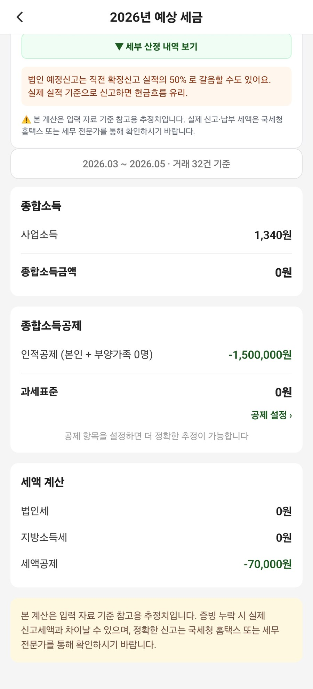

홍보 페이지가 아니라,
실제로 따라 하는 사용설명서
기존 안내에서 부족했던 가입 순서, 메뉴 위치, 영수증 저장 전 확인사항, 직원 권한, 세무사 전송 파일, 오류 대응을 보강했습니다.
자료를 한곳에 모아 정리
- 자연어로 수입·지출 전표 입력
- 영수증 촬영 후 AI 비용처리 참고 판정
- 통장·카드·급여·영수증 월별 정리
- 손익·부가세 예상·월간 리포트 확인
- 세무사에게 엑셀·영수증 ZIP 공유
자동 신고·세무 확정은 아님
- 국세청 신고를 자동 완료하지 않음
- AI 답변이 세무사의 최종 판단을 대체하지 않음
- 앱에 없는 거래를 자동으로 알아내지는 못함
- 입력된 숫자가 틀리면 리포트도 달라짐
- 앱 탈퇴와 스토어 구독 해지는 별도
장부 전체 관리
거래, 카드, 통장, 급여, 리포트, 직원 제출, 세무사 전송을 관리합니다.
영수증 제출 중심
본인 카드 등록과 영수증 제출·제출 내역 확인에 집중된 화면을 사용합니다.
필요 메뉴만 표시
선택한 사업 유형에 따라 급여·원천세·부가세 등 불필요한 메뉴가 줄어듭니다.
처음 설치했다면 이 순서대로
첫날에는 모든 자료를 옮기려 하지 말고 아래 7가지만 끝내면 됩니다.
- 회원가입·이메일 확인 후 사업 유형과 주요 수입 형태를 정확히 선택합니다.
- 설정 → 회사/내 정보에서 상호·대표자·사업자번호를 확인합니다.
- 설정 → 통장·카드에 실제 사용하는 사업용 계좌와 카드를 등록합니다.
- 거래 입력에서 이번 달 대표 수입·지출 몇 건을 자연어로 입력해 봅니다.
- 영수증 비용처리에서 영수증 1장을 촬영하고 분석 결과를 검토한 뒤 저장합니다.
- 전표 탭에서 ‘미분류’ 표시를 확인하고 빠진 계정과목·증빙을 보완합니다.
- 설정 → 세무사 관리에 이메일을 등록한 뒤 월말에 ‘세무자료 보내기’를 사용합니다.
가입과 업종 설정이 화면을 결정합니다
캐디, 프리랜서/3.3%, 간이·일반 개인사업자, 법인, 임대사업자, 개인 지출관리 중 가장 가까운 유형을 선택하세요. 이 값에 따라 세금 일정과 급여 메뉴가 달라집니다.
회원가입 후 이메일 확인
로그인이 되지 않으면 가입 이메일의 인증 메일을 먼저 확인하고, 스팸함도 살펴보세요.
‘어떤 분이신가요?’에서 유형 선택
실제 신고 형태와 가장 가까운 항목을 고릅니다. 개인사업자는 업종과 현금·카드 매출 형태, 법인은 업종과 직원 수, 임대사업자는 임대 유형을 추가로 입력합니다.
나중에 바꾸려면
유형을 바꾸면 보이는 메뉴와 세금 일정이 달라질 수 있으니 실제 사업 형태를 기준으로 수정하세요.
하단 메뉴는 이렇게 사용합니다
요약·마감·잔액
전체 거래·미분류
월별 사용 리포트
해당 유형만 표시
자료 전송·계정

홈: 오늘 확인할 것부터
이번 달 수입·지출·순이익, 통장 잔액, 카드 지출, 세금 일정, 미분류 전표를 한 번에 봅니다.
- 숫자를 누르면 관련 상세 내역을 확인합니다.
- 내부 이체나 카드대금 정산은 손익에서 중복 집계되지 않도록 구분됩니다.
- 금액이 예상과 다르면 전표의 날짜·입출금 방향·분류부터 확인합니다.
전표: 월말 정리의 중심
월을 바꾸고 전체·미분류·입금·출금·증빙 확인 필요 등의 필터로 빠진 거래를 찾습니다.
- 빨간 배지는 아직 분류하지 않은 전표 수입니다.
- 계정과목, 설명, 메모, 카드·통장 연결을 수정합니다.
- 삭제 전에는 중복 입력인지 실제 거래인지 한 번 더 확인합니다.

거래와 영수증을 넣는 3가지 방법
한 가지 방식만 고집할 필요가 없습니다. 말로 입력하고, 영수증은 촬영하고, 증빙이 없는 해외 구독 등은 수동으로 보완하세요.
자연어 거래 입력
“국민은행으로 매출 30만원 들어왔어”처럼 날짜·금액·수단·용도를 말하듯 입력합니다.
영수증 AI 분석
촬영 또는 갤러리 선택 후 가맹점·금액·날짜·비용처리 가능성·계정과목을 검토합니다.
누락 결제 직접 추가
영수증 없는 해외 SaaS·API·카드 명세서 거래를 직접 입력하고 카드와 연결합니다.
자연어 거래 입력
좋은 입력: “7월 3일 신한은행으로 거래처 대금 55만원 입금”처럼 날짜, 수단, 금액, 이유를 함께 씁니다. AI가 만든 전표는 저장 전에 입금/출금, 금액, 계정과목을 확인하세요.
영수증 촬영·분석·저장
영수증 전체가 밝고 반듯하게 보이도록 촬영합니다. 분석 후 가맹점, 날짜, 총액, 카드, 비용 목적, 부가세 공제 상태를 직접 확인한 다음 저장합니다.
영수증 없는 결제 보완
해외 구독·API·명세서 결제처럼 영수증이 없을 때 날짜, 원화 금액, 가맹점, 카드, 용도를 입력합니다. 증빙이 부족한 거래는 메모에 근거를 남기고 세무사와 확인하세요.

말하듯 입력해도, 저장은 숫자로 확인
AI는 입력을 돕지만 최종 전표는 사용자의 장부가 됩니다. 저장 버튼을 누르기 전에 날짜, 금액, 입출금 방향, 결제수단, 계정과목을 확인하세요.
카드·통장은 먼저 등록해야 정리가 쉬워집니다
통장 등록
은행명, 계좌번호, 시작 잔액을 실제 값과 맞춥니다. 리포트와 엑셀에는 계좌번호가 일부 가려져 표시됩니다.
카드 등록
카드사, 이름, 앞·뒤 번호를 등록하면 영수증과 거래를 카드별로 연결하기 쉽습니다.
카드 결제일
결제 규칙과 출금 통장을 맞추면 홈에서 예정 카드대금과 실제 인출을 점검할 수 있습니다.
카드 탭: 월별 사용액과 사람별 내역
월을 바꿔 총 사용액, 주요 사용처, 직원·카드별 금액을 봅니다. 카드대금 출금은 비용을 새로 만드는 거래가 아니라 이미 입력된 카드 지출의 정산인지 확인하세요.

리포트는 ‘확정 신고서’가 아니라 점검표입니다
입력된 전표를 기준으로 월별 흐름과 예상치를 보여줍니다. 숫자가 이상하면 원본 거래부터 고친 뒤 다시 확인하세요.
월간 리포트
수입·지출·순이익, 전월 대비 변화와 지출 구성을 봅니다.
재무제표
손익계산서와 재무상태 요약으로 장부의 큰 흐름을 확인합니다.
예상 세금
사업 유형과 입력 자료를 바탕으로 부가세·소득세 관련 예상치를 점검합니다.
 손익계산서매출·비용·손익 구조
손익계산서매출·비용·손익 구조 예상 세금계산 근거와 확인사항
예상 세금계산 근거와 확인사항
세금 상세항목별 금액과 주의사항 재무제표기간별 재무 요약
재무제표기간별 재무 요약 거래 상세카드별·가맹점별 추적
거래 상세카드별·가맹점별 추적직원은 전체 장부 대신 제출 화면을 사용합니다

대표·관리자: 14일짜리 1회용 코드 만들기
- 직원·관리자·세무 담당자 중 역할을 고릅니다.
- 1회용 초대코드를 만들고 공유 버튼으로 전달합니다.
- 사용한 코드나 더 이상 필요 없는 코드는 비활성화합니다.
- 직원별 이번 달 영수증 제출 건수와 금액을 확인합니다.
직원: 회원가입 또는 로그인
초대 메시지의 앱을 설치하고 본인 계정으로 로그인합니다.
초대코드로 회사 합류
‘초대코드로 회사에 합류하기’에서 관리자가 보낸 코드를 입력합니다.
이름·사용 카드 등록 후 영수증 제출
직원 제출 모드에서는 본인 카드 등록, 영수증 촬영·제출, 내가 올린 제출 내역 확인을 사용합니다. 제출 자료는 관리자가 검토합니다.
세무자료 보내기는 설정에서 시작합니다
세무사 이메일을 먼저 등록한 뒤, 자료가 존재하는 월만 선택해 이메일 또는 휴대폰 공유 기능으로 보냅니다.
세무사 정보 등록
이름, 이메일, 사용하는 회계 프로그램(선택)을 입력합니다. 이메일 주소는 전송 전 다시 확인하세요.
‘세무자료 보내기’에서 월 선택
거래·급여·영수증 중 저장 자료가 있는 월이 표시됩니다. 여러 달을 선택할 수 있으며, 미분류 전표가 있다면 먼저 정리하는 것이 좋습니다.
파일 종류와 전송 방법 선택
이메일은 등록된 세무사에게, 공유는 카카오톡·메일·파일 앱 등 휴대폰의 공유 시트를 이용합니다.
| 내보내기 | 포함 내용 | 이럴 때 사용 |
|---|---|---|
| 월별 세무자료 Excel | 통장·카드·기타 전표, 급여/원천세, 영수증 비용처리, 추가 소득, 통장·카드 요약 | 매월 기본 기장자료 전달 |
| 영수증 ZIP | 선택 기간에 보관된 영수증 이미지 | 원본 증빙을 함께 요청받았을 때 |
| 세무자료 + 영수증 | 월별 Excel과 영수증 ZIP 묶음 | 분기·반기 자료를 한 번에 보낼 때 |
| 회계 업로드용 파일 | 통장내역, 해외 법인카드 결제 등 별도 업로드용 Excel | 세무사 프로그램 입력 보조가 필요할 때 |
 전표·통장입출금과 월초·월말 잔액
전표·통장입출금과 월초·월말 잔액 카드 사용카드별 지출과 계정과목
카드 사용카드별 지출과 계정과목 급여·원천세·기타선택 월의 신고 보조 자료
급여·원천세·기타선택 월의 신고 보조 자료세무자료는 편리함보다 확인이 먼저입니다
계정과 초대코드
비밀번호를 공유하지 말고, 직원은 각자 계정으로 초대하세요. 사용하지 않는 초대코드는 바로 끕니다.
영수증과 금융자료
공개 링크나 단체방에 원본을 올리지 마세요. 전송 대상과 이메일 주소를 확인합니다.
AI 결과
AI가 추천한 비용처리·계정과목·세액은 참고용입니다. 애매한 거래는 메모 후 전문가에게 확인합니다.
회원 탈퇴 전: 필요한 자료를 먼저 내보내세요. 계정 탈퇴는 앱 데이터 삭제 절차이며, App Store 또는 Google Play의 유료 구독은 각 스토어의 ‘구독 관리’에서 별도로 해지해야 합니다.
막힐 때 가장 먼저 확인할 것
세무자료 보내기에 선택할 월이 나오지 않아요.
홈과 카드 리포트의 금액이 달라요.
AI가 영수증을 잘못 읽었어요.
카메라나 알림이 작동하지 않아요.
직원이 회사 전체 장부를 볼 수 없어요.
PDF 카드 명세서 가져오기 메뉴가 없어요.
구독을 복원하거나 해지하고 싶어요.
오류나 기능 문의는 어디에 하나요?
오늘은 거래 한 건,
영수증 한 장부터 시작하세요.
완벽한 장부를 한 번에 만들기보다 자료가 생길 때마다 쌓는 습관이 가장 강력합니다.